<div class="home-section">
  <div class="container-fluid">
    <div class="home-content">
      <div class="home-carsouel">
        <div
          id="carouselExampleIndicators"
          class="carousel slide m-auto w-100 h-100"
          data-bs-ride="carousel"
        >
          <div class="carousel-inner w-100 h-100 m-auto">
            <div class="carousel-item active mt-2">
              <div class="h">
                
              </div>
            </div>
            <div class="carousel-item mt-4">
              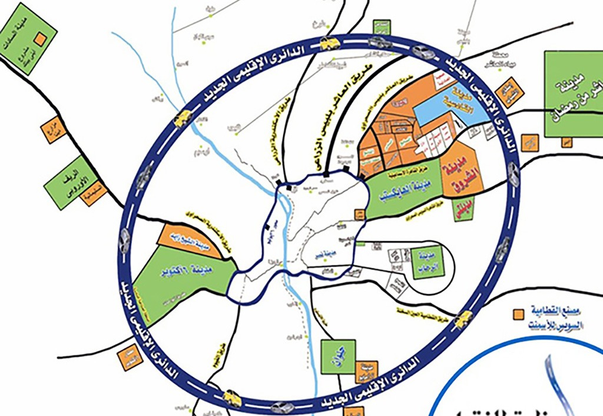
            </div>
            <!-- <div class="carousel-item mt-2">
              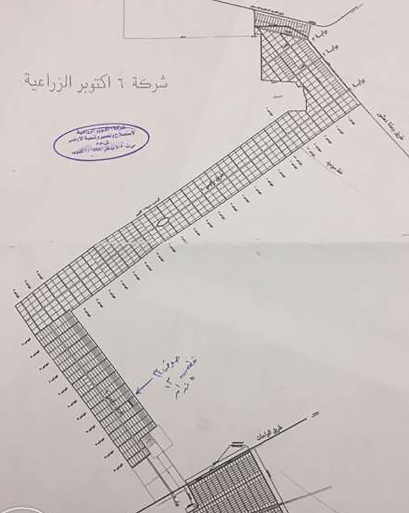
            </div> -->
            <div class="carousel-item mt-2">
              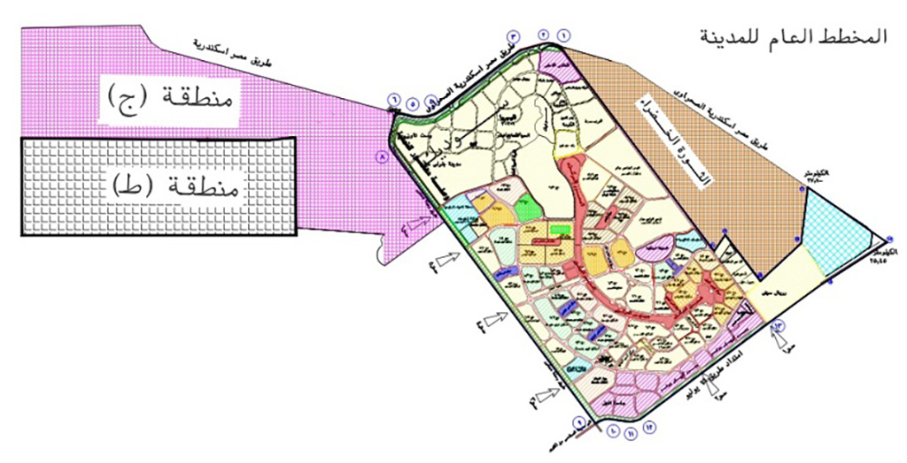
            </div>
            <div class="carousel-item mt-2">
              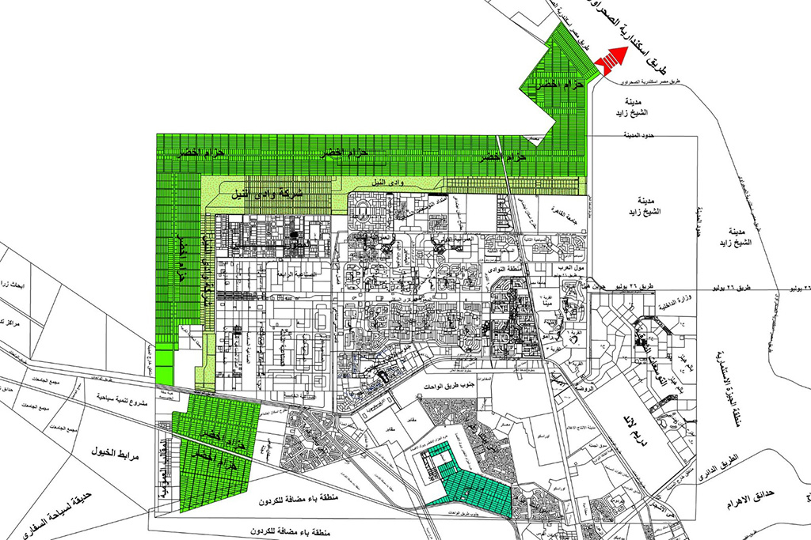
            </div>
            <div class="carousel-item mt-2">
              
            </div>
            <div class="carousel-item mt-2">
              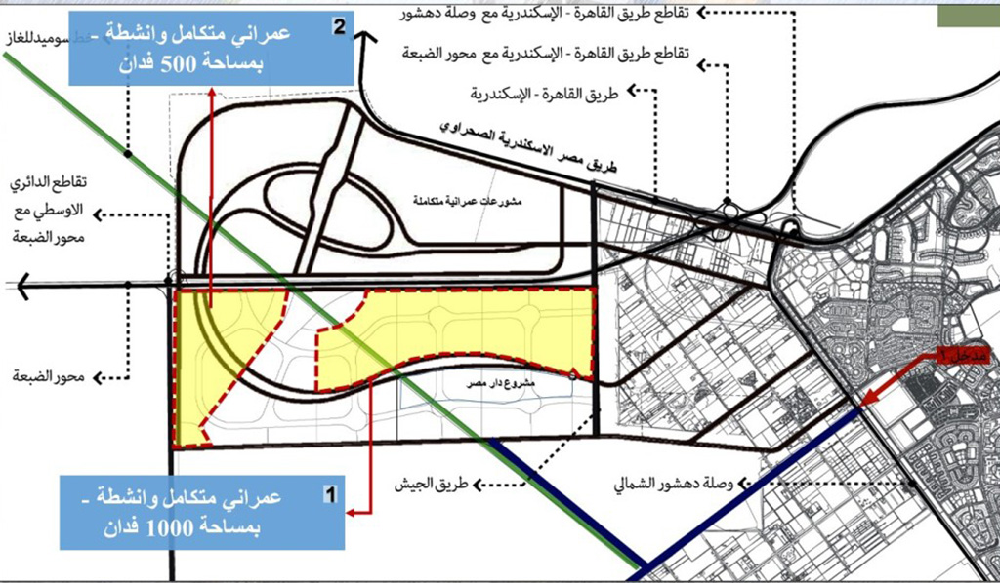
            </div>
            <div class="carousel-item mt-2">
              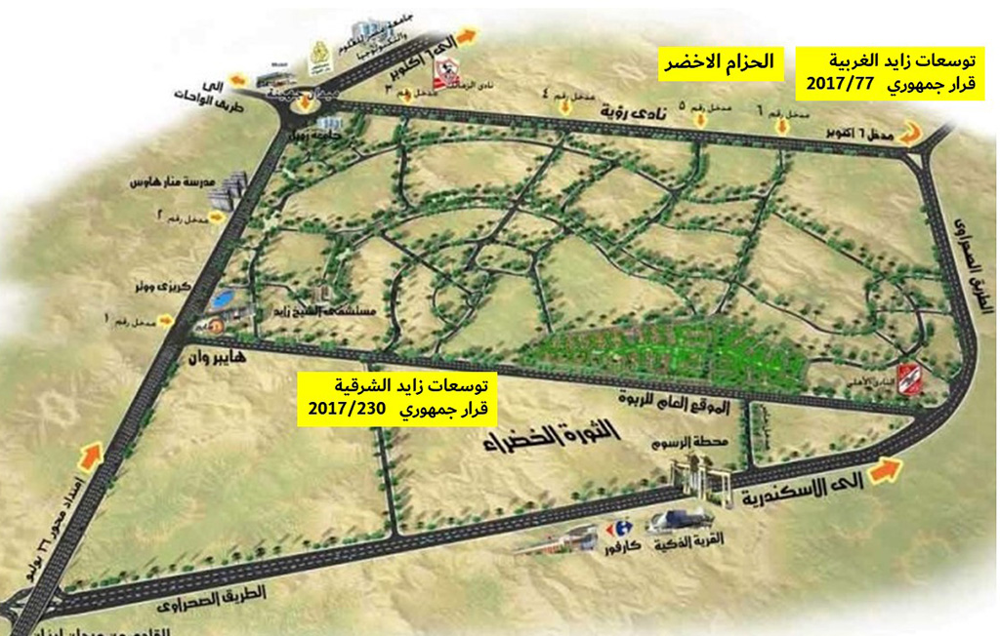
            </div>
            <div class="carousel-item mt-2">
              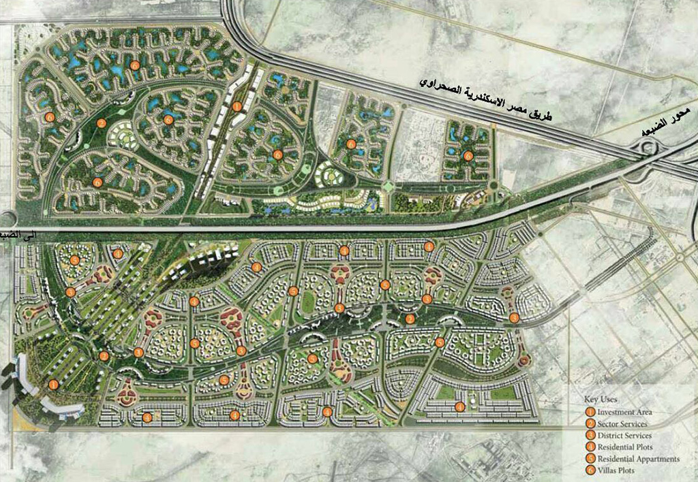
            </div>
            <div class="carousel-item mt-2">
              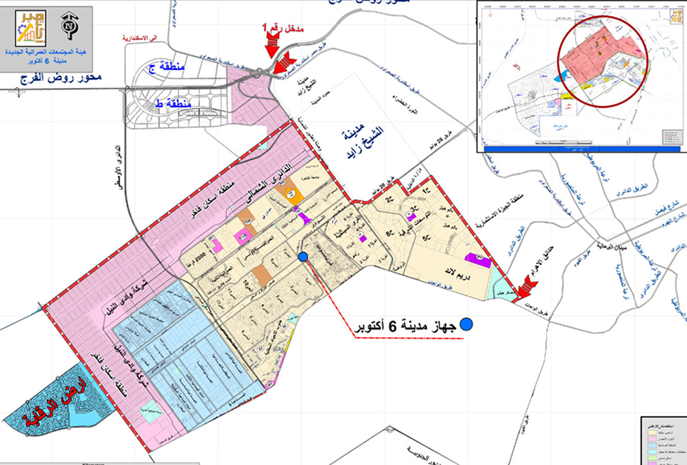
            </div>
            <div class="carousel-item mt-2">
              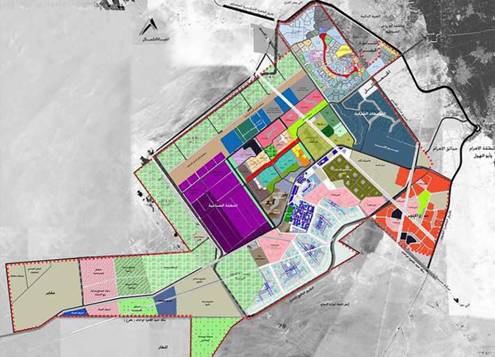
            </div>
            <div class="carousel-item mt-2">
              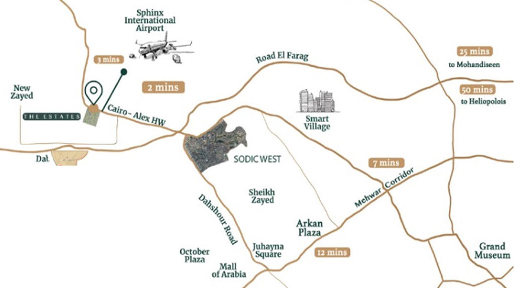
            </div>
            <div class="carousel-item mt-2">
              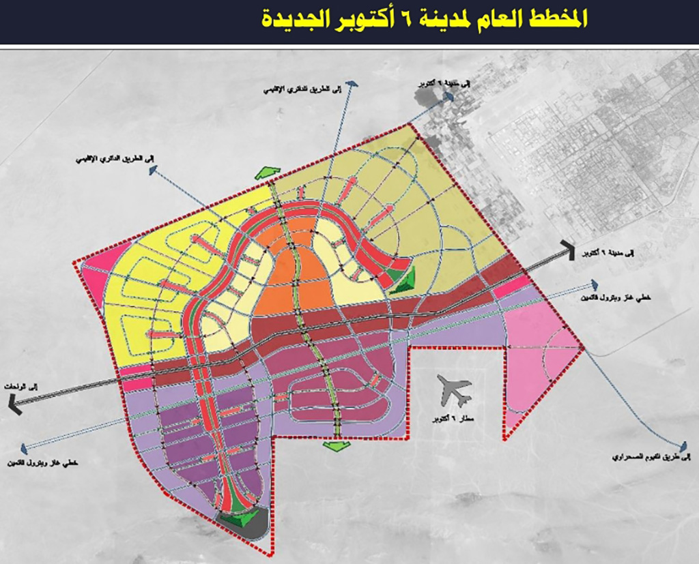
            </div>
            <div class="carousel-item mt-2">
              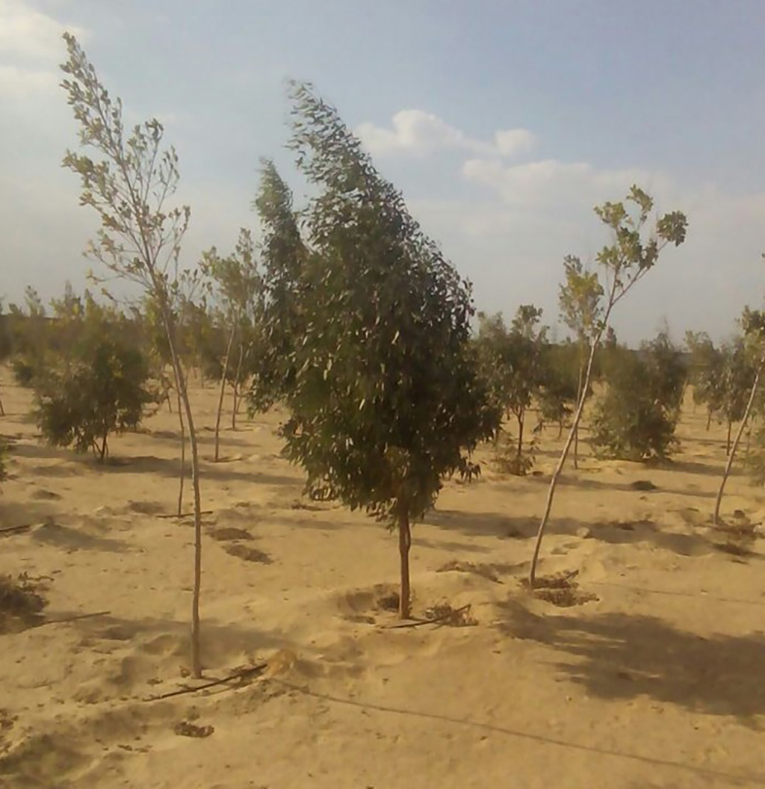
            </div>
            <div class="carousel-item mt-2">
              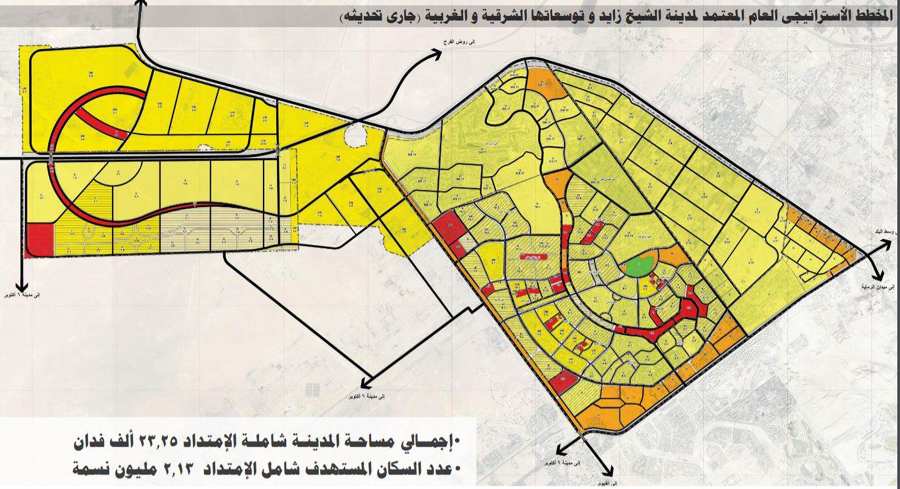
            </div>
          </div>
          <button
          class="carousel-control-prev bg-light"
          type="button"
          data-bs-target="#carouselExampleIndicators"
          data-bs-slide="prev"
        >
          <span
            class="carousel-control-prev-icon bg-dark"
            aria-hidden="true"
          ></span>
          <span class="visually-hidden">Previous</span>
        </button>
        <button
          class="carousel-control-next bg-light"
          type="button"
          data-bs-target="#carouselExampleIndicators"
          data-bs-slide="next"
        >
          <span
            class="carousel-control-next-icon bg-dark"
            aria-hidden="true"
          ></span>
          <span class="visually-hidden">Next</span>
        </button>
        </div>
      </div>
    </div>
    <div class="container">
      <div style="width: 100%; padding: 7rem 3rem 3rem 3rem; font-size: 18px; font-weight: 600;">
        <div class="text" style="line-height: 40px; text-align: justify;">
          تم بناء هذه الصفحة كخدمة مجانية لملاك و مستثمرى منطقة الحزام الاخضر
          مدينة ٦ اكتوبر و تشمل اهم المعلومات و القرارات المتعلقة بالمنطقة و كذا
          عروض بيع اراضى مباشرة من الملاك دون وسطاء. تم تخطيط منطقة الحزام
          الأخضر بقرار من هيئة المجتمعات العمرانية الجديدة عام 1992 على مساحة 17
          ألف فدان تمتد بطول مدينة أكتوبر من طريق مصر - الإسكندرية الصحراوى
          مقابل مشروع «بفرلى هيلز» على طريق وصلة دهشور، وحتى طريق الواحات
          البحرية، وتحيط بكردون المدينة، وقد تم تقسيم مساحة الحزام إلى قطع،
          مساحة كل قطعة 5 أفدنة، وتقع على طرق رئيسية وفرعية تشمل حرماً للطرق،
          بحيث يسهل إدخال المرافق إلى جميع القطع عام 1995 تعاقدت شركة 6 أكتوبر
          الزراعية لاستصلاح وتعمير وتنمية الاراضى مع هيئة المجتمعات العمرانية
          لشراء مساحة فدان 12345 و قامت الشركة بمد المرافق و اعمال البنية
          التحتية للمساحة المتعاقد عليها و تم بيع الاراضى المقسمة لشركات و أشخاص
          كأراضى استصلاح زراعى و بالفعل تم تعمير المنطقة و الزراعة بشكل يتناسب و
          الموارد المتاحة من مياه رى و غيرها لاثبات الجدية على مدار 22 عاما حتى
          بدأت الدولة عام 2017 فى اصدار عدة قرارات لتغيير النشاط من زراعى الى
          سكنى و خدمى
        </div>
        <div class="goals">
          <div
            class="title"
            style="font-weight: 700; margin: 2rem 0"
          >
            اهداف الصفحة
          </div>
          <div class="text" style="font-weight: 600">
            • تداول المعلومات و القرارات الحكومية بين ملاك الاراضى و جهة الولاية
            و المطورين <br /><br />
            • توعية الملاك بتطورات و مستجدات الاوضاع و تحركات السوق العقارى
            بالمنطقة<br /><br />
            • وضع سياسة تسعيرية عادلة مبنية على أسس علمية يسرع من الوصول الى سعر
            بيع عادل و موحد للمتر المربع يتوافق عليه جميع الملاك <br /><br />
            • الرد على استفسارات الملاك الفنية و القانونية (أسئلة متكررة)<br /><br />
            • تسهيل واسراع اجراءات القرار الوزارى وتراخيص البناء من خلال توافر
            كافة الاشتراطات والقرارات المتعلقة بتغيير النشاط و ما يتبعه من
            التزامات على كلا من المالك و المطور<br /><br />
            • دعم الملاك فى تطوير المنطقة فى اسرع وقت ممكن من خلال ترشيح عناصر
            تتمتع تتمتع بالامانة و الاحترافية من مكاتب هندسية و قانونية و
            تسويقية <br /><br />
          </div>
        </div>
      </div>
    </div>
  </div>
</div>
